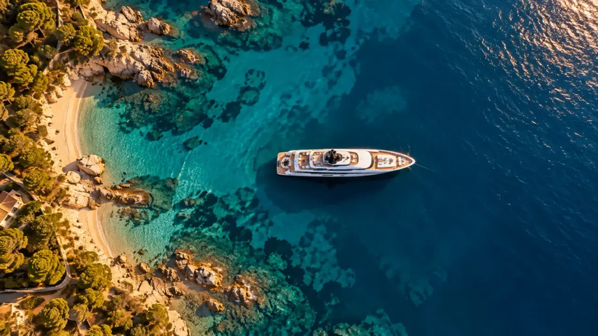
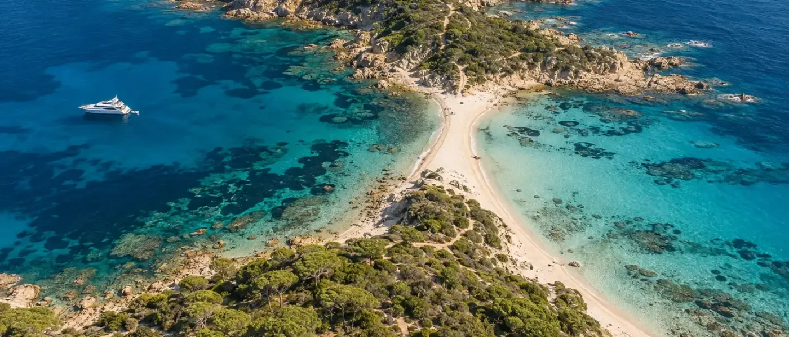
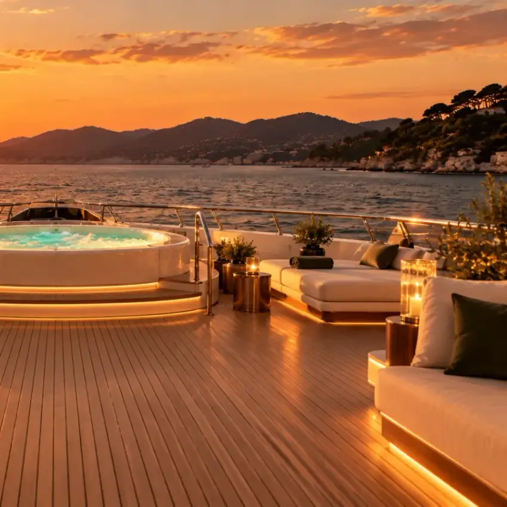

Le nom et la carte
Un portulan est une carte marine ancienne, dessinée par ceux qui naviguaient. Le nom donne tout l'univers : rose des vents, lignes de relèvement, cartouches. Le site s'ouvre sur une carte qui brûle et laisse place à la mer.

Un projet de démonstration mené de bout en bout : une identité, une visite immersive, quatre langues, un espace client et un espace de gestion pour le directeur. Ce que le métier impose, ce que la direction artistique en tire, et ce que ça représente comme projet.
Portolan est un courtier fictif. La maison, les yachts, les prix et le témoignage sont inventés : ce n'est pas une référence client. Les images et la visite sont générées par intelligence artificielle, puis montées et animées pour le site.
Le site, lui, fonctionne. Il est en ligne, en quatre langues, avec une vraie base de données : on peut créer un compte, réserver une semaine, et visiter l'espace directeur en mode démonstration.
Un yacht de cinquante mètres ne se regarde pas en vignette. On veut monter à bord avant de demander un prix.
Le brief que je me suis donné : le site d'un courtier qui vend et loue des yachts de Saint-Tropez à Monaco, pour une clientèle internationale qui ne lit pas toujours le français et qui compare plusieurs maisons avant d'écrire.
À ce niveau, un client n'achète pas une fiche technique : il achète une confiance et une façon de vivre la mer. Le site doit donc faire vivre le bateau avant de le décrire, et laisser au courtier la main sur tout ce qui change : la flotte, les prix, les semaines disponibles.

Un portulan est une carte marine ancienne, dessinée par ceux qui naviguaient. Le nom donne tout l'univers : rose des vents, lignes de relèvement, cartouches. Le site s'ouvre sur une carte qui brûle et laisse place à la mer.
Vert abysse, calcaire, laiton. Pas de bleu marine attendu ni de blanc clinique : les couleurs d'un bateau entretenu, du teck et des accastillages, qui tiennent aussi bien sur un écran de téléphone qu'en grand.
La flotte se parcourt sur un limbe gradué qui tourne au défilement, comme un sextant. Chaque yacht a son relèvement. On ne fait pas défiler des cartes : on règle un instrument.
Une didone aux contrastes forts pour les titres, une linéale sobre pour le texte. Le ton est celui d'un carnet de navigation : précis, calme, jamais publicitaire.
La page d'accueil est un plan-séquence : la caméra part de la baie de Pampelonne, rejoint le yacht, monte à bord par la plage de bain et traverse chaque pièce jusqu'au jacuzzi. Le défilement pilote la visite, sans coupure. Chaque yacht de la flotte a ensuite sa propre visite, « Monter à bord ».
C'est la réponse à la première question d'un acheteur : à quoi ressemble la vie à bord. La fiche technique vient après, pour ceux qui ont déjà envie.
Ce qui distingue un site de courtier d'une plaquette en ligne, et pourquoi chaque fonction est là.
Cinquante-deux pages, une adresse par langue, et le visiteur arrive directement dans la sienne. Chaque version est indexable séparément : un acheteur allemand trouve Portolan en cherchant en allemand.
Le client choisit ses dates sur le calendrier du yacht, voit le prix, crée son compte et retrouve ses demandes dans « Mon espace ». La demande arrive complète : dates, port d'embarquement, nombre d'invités.
Tableau de bord, réservations à confirmer, calendrier, demandes, clients, et la flotte : textes dans les quatre langues, photos et prix. Aucune intervention technique pour changer un prix ou ajouter un yacht.
Un simulateur du coût annuel d'un yacht à l'achat, un simulateur de budget pour une semaine de location, une carte de dix mouillages entre Saint-Tropez et Monaco. Le client arrive au premier échange en sachant déjà ce qu'il veut.
Un acheteur compare trois maisons.
Il ne visite que celle qui l'a fait
monter à bord.
Treize pages en quatre langues, plus six fiches yachts générées depuis la même base.
Le plan-séquence de l'accueil et une visite immersive par yacht.
Un espace client avec réservation, un espace directeur pour tout gérer.
De la première conversation à la mise en ligne, identité et contenus compris.
Un projet de l'ampleur de Portolan représente un budget à partir de 18 000 €. Le montant exact dépend de ce qui existe déjà : des photographies réelles et des traductions fournies le réduisent, des visites supplémentaires ou une cinquième langue l'augmentent.
Il peut aussi se construire par étapes : d'abord le site immersif en plusieurs langues, puis l'espace de gestion, puis la réservation en ligne. Tous les projets Ultra ne sont pas de cette taille : l'offre Ultra commence bien avant, et chaque devis est établi après une première conversation, gratuite.
Ouvrez Portolan sur un téléphone, faites défiler l'accueil, changez de langue, ouvrez la fiche de Camarat et lancez « Monter à bord ». L'espace directeur se visite aussi, en mode démonstration, sans compte.
Site de démonstration · entreprise fictive

Vente et location de yachts : flotte, visites, langues, demandes qualifiées.
→ Page broker yachtPour les loueurs et les agences de charter du Var et de la Côte d'Azur.
→ Page location de yachtLa même logique pour des villas : montrer un lieu avant de décrire un bien.
→ Immobilier Saint-TropezDes propriétaires exigeants, plusieurs langues, un espace pour suivre les demandes.
→ Conciergerie Saint-TropezUn studio indépendant, basé à Saint-Tropez, pour tout le Golfe.
→ Page Saint-TropezMode, domaine viticole, immobilier, restaurant, artisans : chaque projet a sa propre identité.
→ Voir le portfolioUn premier échange, gratuit et sans engagement, pour comprendre votre maison et votre clientèle. Le devis vient ensuite, détaillé.
Premier échange gratuit · Sans engagement · Réponse sous 24h